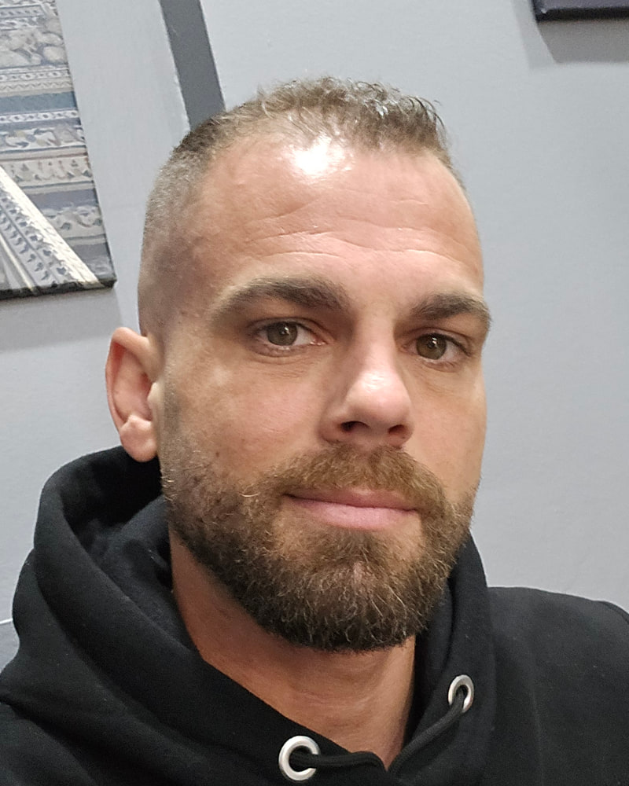

Zuverlässigkeit
Ich gehe Aufgaben verbindlich an und halte Absprachen ein. Wenn etwas offen oder unklar ist, kümmere ich mich darum, statt es liegenzulassen.
BEWERBUNG & PORTFOLIO
Kundenservice · Support · Digitale Assistenz
KI & moderne Tools
Ich möchte mich beruflich weiterentwickeln und meine praktische Erfahrung, selbstständiges Arbeiten und mein Interesse an digitalen Tools in einer langfristigen Remote-Tätigkeit verbinden.

Dominic Pohl
Praktisch erfahren.
Digital neugierig.
01 ÜBER MICH
Meine berufliche Erfahrung reicht von Logistik und Mitarbeiterkoordination über Kundenkontakt bis hin zu selbstständiger digitaler Arbeit und dem Aufbau eines Gastronomiebetriebs in Thailand. In diesen unterschiedlichen Bereichen habe ich gelernt, Verantwortung zu übernehmen, auch bei hoher Auslastung strukturiert zu arbeiten und mich schnell auf neue Situationen einzustellen.
Besonders wichtig ist mir, Aufgaben zuverlässig und nachvollziehbar zu erledigen. Ich arbeite gern selbstständig, kann mich aber genauso in ein Team einfügen und klar kommunizieren. Durch meine bisherigen Tätigkeiten habe ich gelernt, praktisch zu denken, Prioritäten zu setzen und Probleme nicht unnötig kompliziert zu machen.
Heute möchte ich diese Erfahrung stärker mit digitalen Themen verbinden. Ich arbeite regelmäßig mit modernen KI-Werkzeugen, beschäftige mich mit eigenen digitalen Projekten und lerne neue Tools vor allem durch praktische Anwendung kennen. Mein Ziel ist eine langfristige Remote-Tätigkeit, in der Zuverlässigkeit, selbstständiges Arbeiten und Weiterentwicklung wirklich zählen.
Mir ist wichtig, dass man sich aufeinander verlassen kann.
02 MEIN NÄCHSTER SCHRITT
Ich suche eine langfristige Remote-Tätigkeit mit klaren Aufgaben, zuverlässiger Zusammenarbeit und Raum, mich weiterzuentwickeln.
Offen für neue Aufgaben. Bereit, mich einzuarbeiten.
03 STÄRKEN
Gute Arbeit beginnt für mich bei den Grundlagen: aufmerksam sein, mitdenken und dranbleiben.
Ich gehe Aufgaben verbindlich an und halte Absprachen ein. Wenn etwas offen oder unklar ist, kümmere ich mich darum, statt es liegenzulassen.
Ich organisiere meine Aufgaben eigenständig, setze Prioritäten und behalte auch bei mehreren Themen den Überblick.
Neue Abläufe erschließe ich mir Schritt für Schritt. Ich probiere aus, frage gezielt nach und setze Feedback direkt um.
Ich suche nicht nach möglichst komplizierten Lösungen, sondern nach Wegen, die zuverlässig funktionieren und im Alltag sinnvoll sind.
Durch Mitarbeiterverantwortung, Kundenkontakt und internationale Erfahrung habe ich gelernt, klar zu kommunizieren, zuzuhören und unterschiedliche Menschen ernst zu nehmen.
Ich arbeite mich aktiv in neue digitale Werkzeuge ein. KI nutze ich als Arbeitsmittel, prüfe Ergebnisse aber selbst und verbessere sie Schritt für Schritt.
04 BERUFLICHER HINTERGRUND
Mein beruflicher Weg verbindet praktische Arbeit, Verantwortung im Team und selbstständige Tätigkeiten.
seit
25 Std./Woche
Lidl · Deutschland
Einsatz in verschiedenen Bereichen des Filialalltags, darunter Kasse, Warenverräumung, Backshop, Kundenservice, Lagerarbeiten und Reinigung. Flexible Unterstützung im Tagesgeschäft und zuverlässige Bearbeitung wechselnder Aufgaben.
–
Freiberufliche digitale Kundenbetreuung · Remote
Bearbeitung von Kundenanfragen über digitale Plattformen, selbstständige Organisation laufender Aufgaben und zuverlässige Einhaltung von Qualitäts- und Kommunikationsvorgaben.
–
DOMSA Smoked BBQ · Thailand
Mitwirkung beim Aufbau und bei der Organisation des Gastronomiebetriebs, Koordination täglicher Abläufe und direkter kundenorientierter Kommunikation.
–
Harry-Brot GmbH · Deutschland
Mitarbeiterkoordination, Aufgabenverteilung und Organisation logistischer Abläufe. Verantwortung für die Einhaltung von Qualitäts-, Hygiene- und Arbeitsstandards.
2017 – 2022
Weihe GmbH · Deutschland
Lagerorganisation, Kommissionierung und Unterstützung logistischer Prozesse unter Einhaltung festgelegter Arbeits- und Sicherheitsabläufe.
2013 – 2017
ZASP Zustellagentur Spandau · Berlin
Bearbeitung von Wareneingang und Warenausgang, Kommissionierung und Unterstützung allgemeiner Lagerabläufe.
05 PROJEKTE
Ein eigenes Projekt, an dem ich plane, teste, lerne und digitale Werkzeuge praktisch einsetze.
EIGENES DIGITALES APP-PROJEKT
Beziehungen.
Gemeinsame Aktivitäten.
Eine eigene Idee.
Verwendete Technologien im Projekt
PairFlow ist mein eigenes digitales App-Projekt rund um Beziehungen und gemeinsame Aktivitäten. Ich entwickle es mit Unterstützung moderner KI-Coding-Tools weiter.
Mein Beitrag liegt in der Konzeption, Funktionsplanung, im Testen und in der Qualitätssicherung. Ich beschreibe Anforderungen, analysiere Fehler und kontrolliere die Ergebnisse der KI-gestützten Umsetzung.
Mein Schwerpunkt: das Projekt gestalten, die Umsetzung mit KI begleiten und dabei dazulernen.
06 FÄHIGKEITEN & TOOLS
Digitale Grundlagen und praktische Projektarbeit, auf denen ich weiter aufbauen möchte.
Flutter und Firebase nutze ich im Rahmen eigener Projekte.
07 AUSBILDUNG
Euro Train Berlin
2009 – 2013
B.-Traven-Oberschule Berlin
2003 – 2007
08 SPRACHEN
09 KONTAKT
DER NÄCHSTE SCHRITT BEGINNT MIT EINEM GESPRÄCH.
Ich freue mich über interessante Remote-Möglichkeiten und einen persönlichen Austausch.
dominic.pohl@gmx.de
Lebenslauf herunterladen (PDF)